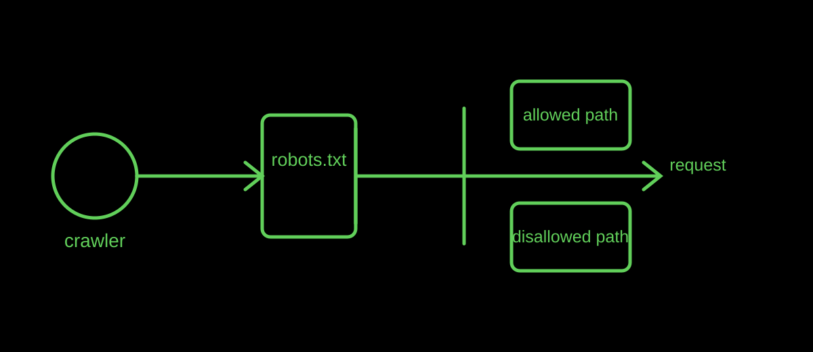

Crawler basics
What Is robots.txt? A Plain-English Guide for Website Owners
robots.txt is a public text file at the root of a website that communicates crawl preferences to automated clients. It is a request, not a password gate.
Published · By the bug breeder

The short answer
A crawler looks for /robots.txt at a site's top-level path and can use its rules when deciding which URLs to fetch. The standard describes crawlers as automated clients and defines Allow and Disallow path rules.
What it is good for
Use the file to express crawl preferences for sections that are unimportant, repetitive, or costly to fetch. A sitemap line can also point crawlers to a list of public URLs. For a small static site, a short, readable file is often enough.
In the Insectary, the file is another quiet signal in the habitat: a page addressed to non-human visitors before they enter the rest of the site.
What it cannot do
robots.txt is not access authorization. A private page still needs real access control, and a blocked path can still be known through links or other records. Never place a secret URL in robots.txt expecting it to disappear.
Limits
Different automated clients may have different capabilities and policies. Treat the file as a published instruction, then use server-side controls when access must actually be enforced.